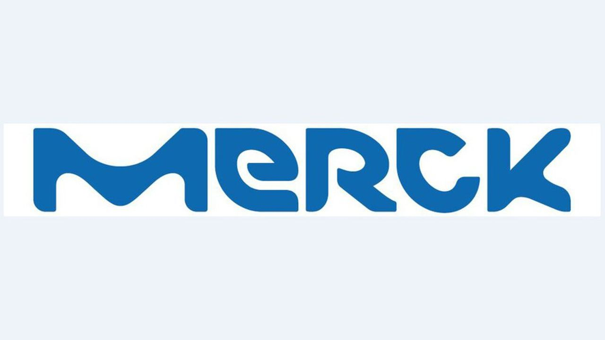
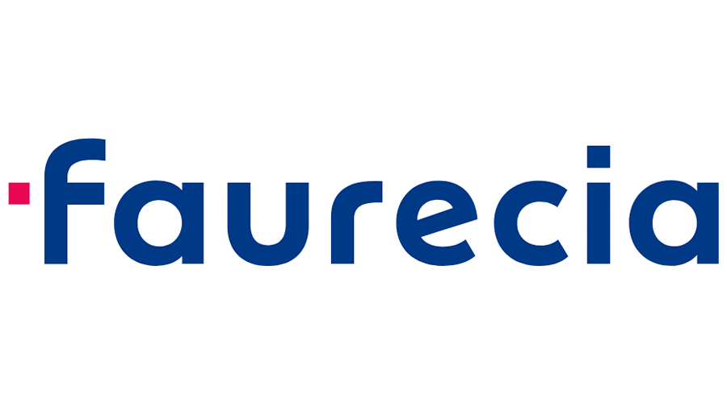

Bienvenue sur mon Portfolio
C'est ici que je vais présenter mes compétences et mes réalisations.
Mes Compétences
- Intégration continue et déploiement (CI/CD)
- Conception d'API et intégration
- Gestion de bases de données
- Développement orienté cloud et gestion d'identités
- Réseau et configuration
- Scripting et automatisation
- Gestion de projet
- Sécurité et compliance
Mes Projets
Expérience Professionnelle
DARAMIC | Juillet 2023 - Décembre 2023
DEVOPS ENGINEER
- Intégration du DevSecOps pour l'analyse statique de code dans des pipelines dedéploiement continu.
- Conception et mise en oeuvre d'un Bus de données (ESB) en utilisant un framework web moderne et l'intégration avec des APIs de gestion de services.
- Optimisation et amélioration des scripts, avec mise en place de tests automatisés.
MERCK GROUP | Septembre 2022 - Février 2023

STAGIAIRE INGÉNIEURE AMÉLIORATION CONTINUE
Participation à des projets de développement et d’amélioration d'outils informatiques de pilotage de la performance dans un domaine industriel, d'indicateurs de suivi de laperformance des process de l'usine et à ce titre j’ai contribué :
- à la rédaction de cahiers des charges
- à la digitalisation du suivi du TRG usine
- au développement de standards usine et à la mise sous contrôle des nouveaux outils (formation, …)
FAURECIA-CENTRE R&D | Février 2021 - Juillet 2021

STAGIAIRE GESTION TECHNIQUE CENTRALISÉE
- Créer des tableaux de bord pour visualiser la situation des automatismes du site
- Réalisation de scripts avec ScadaBR pour arrêter la climatisation
- Migration de ScadaBR vers ScadaLTS
- Optimiser la vitesse de l'application sur base MySQL
AWALEBIZ | Mars 2019 - Septembre 2019
WEBMASTER JUNIOR
- Chargée des parutions d'images des produits mis en ligne
- Étude comparative des offres de livraison et optimisation des coûts
- Création compte utilisateurs et gestions des droits accès
TRÉSOR PUBLIC SÉNÉGAL | Mai 2018 - Octobre 2018
STAGIAIRE DÉVELOPPEUR ET ASSISTANT FONCTIONNEL SI
- Analyse et mise en oeuvre des demandes d'évolutions d'outils informatiques
- Paramétrage fonctionnel des applications
- Conception et réalisation d’un prototype d’une solution de suivi des paiements des fournisseurs de l'État
Formation Académique
Université de Technologie de Belfort Montbéliard | 2023
Diplôme Ingénieur en Informatique
Eazytraining | 2023
Bootcamp Devops
École Supérieure Multinationale des Télécommunications | 2018
Licence en Télécommunicationset Informatique
Contact
E-mail : fatou.gueye@utbm.fr
LinkedIn : Profil LinkedIn